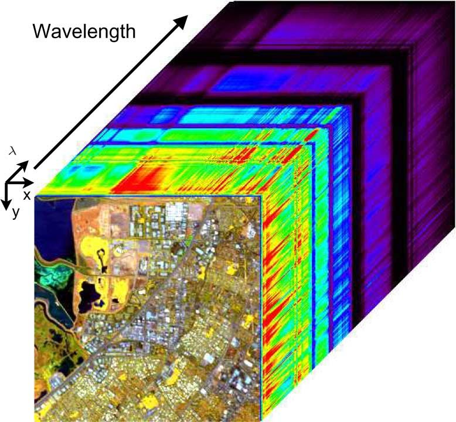

Introduzione

Il punto di partenza della pipeline, deve garantire quella che è la coerenza fisica, perché l'HVS
risponde per prima cosa alla reazione fisica/chimica di una scena osservata.
Il dato iperspettrale riesce a misurare in maniera coerente il fenomeno fisico, acquisendo un dato del tipo (x,y,λ),
che riesce a descrivere la posizione spaziale dell'informazione e la risposta frequenziale alla a tutte le lunghezze d'onda,
andando anche oltre allo spettro visibile, pertanto è necessario fare il primo passaggio, ovvero andare nello spazio visibile
facendo un clip delle informazioni, nel range 400 nm 750 nm.